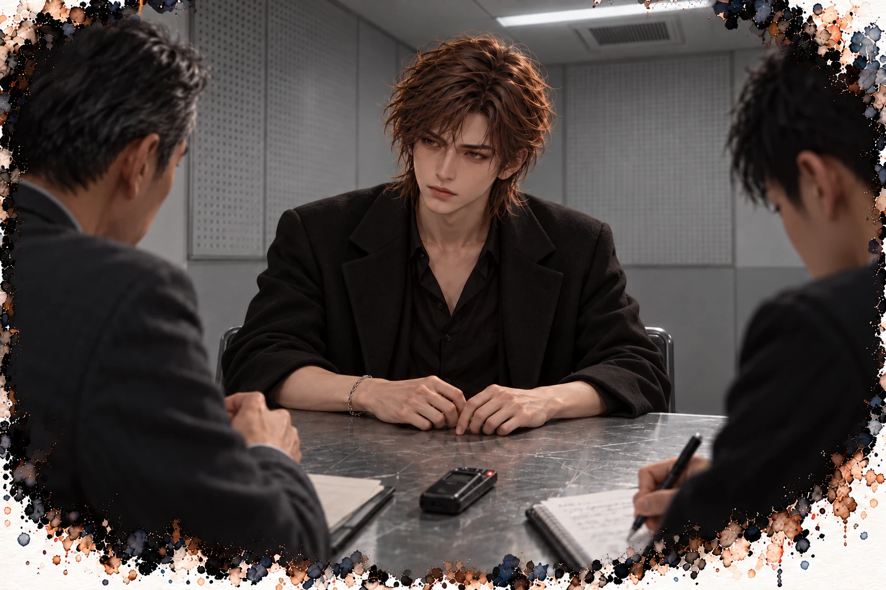

沒有招牌的酒吧 · 第二部
第二章 拍完還不能休息
「Action。」
我不用演。
這幾週，我每天坐在這裡。傷口一天比一天不痛，臉色卻一天比一天更白。營養師說我吃的量還不夠，我說我有吃。我有。只是每一次都在保母車裡，拉著窗簾，吃到一半就被叫走。
妃子在冷宮裡等了很久。最後，她閉上眼睛。
「卡！」
安靜了兩秒。
然後導演站起來，大聲說：「殺青！」
整個片場炸開了。
有人鼓掌，有人尖叫，有人拿出香檳，砰的一聲，瓶塞飛到半空中。泡沫噴出來，灑了一地。燈光師抱著攝影師，化妝師在哭。
我從床上站起來，扶著床柱站穩，笑著。
每一個人都走過來抱我。
「棠姐，妳太強了。」
「剛開完刀就回來，瘦成這樣還撐完，太敬業了。」
「這部播出來，妳一定會爆。」
我笑著說謝謝，謝謝，大家辛苦了。
每一個擁抱都很用力。有人抱到我肚子上的傷口，我咬著嘴唇，沒有出聲。
殺青宴在市區一間義大利餐廳，包了整間。
老洋房改的，挑高很高，天花板吊著一排黃銅吊燈，光是暖的，照得每個人的臉都像已經喝過酒。牆是紅磚，一整面酒櫃頂到天花板，酒瓶一格一格躺著。
中間併了一條長桌，鋪著白桌巾，燭台一路排過去。冷氣很強，可是一開餐就沒用了。廚房的門開開關關，整間都是奶油跟蒜的味道。
導演坐長桌正中間，我的位子排在他右手邊。
菜一大盤一大盤端上來，大家傳著夾。炸物拼盤、焗烤龍蝦、牛排、烤鱈魚、一鍋燉飯，熱氣全往上冒。
導演坐我旁邊，一直幫我夾菜。
「多吃一點，妳辛苦了。」
我的盤子裡堆出一座小山。
我拿著刀叉，看著那座山。
營養師說，這些我現在都還不能吃。太油，太鹹，太大塊。
我知道。
但我想的不是能不能吃。
牛排傳過來，停在我面前。切好的，一片一片斜靠在木板上，切面是粉紅的，肉汁還在往下流。
要先吃邊緣那一圈油脂。煎到焦黃的那一圈，撒一點粗鹽，咬下去是脆的，油在嘴裡化開。然後才吃肉，沾一點芥末籽醬，一口一片。
盤子傳走了。
炸物拼盤停在我面前。花枝圈要趁熱，麵衣咬下去會響，裡面是軟的。薯條挑最細的那幾根，最脆，沾塔塔醬。
焗烤龍蝦要挖起司最焦的那一角，底下的蝦肉吸飽了奶油。
我在腦子裡，每一道都吃過了。
吃得好飽。
烤鱈魚傳過來。
我伸叉子，挑了正中間那一塊。很小，沒有刺，表面只刷了一層橄欖油。
營養師說，軟的魚肉可以。
我放進嘴裡。
很嫩，舌頭一壓就散開。一點海鹽的鹹，一點香草的味道。
是真的味道，不是我在腦子裡加的。
我含了很久才吞下去。
盤子裡那座山，一動都沒動。
「棠姐，妳怎麼不吃？」副導問。
半條長桌都轉過來看我。
長桌尾端，道具組的阿凱跟兩個燈光師占了一角，拿一個大玻璃壺在調酒。伏特加整瓶往下倒，再倒蔓越莓汁、紅石榴糖漿，丟一把冰塊，用一支長湯匙隨便攪兩下。
「殺青特調！」阿凱把壺舉高，「棠姐專屬，冷宮紅！」
整桌都在起鬨。
他倒滿一個小玻璃杯，從長桌那一頭一路傳過來，傳到我面前。紅的，透的，冰塊在裡面撞。
我想起江澈調酒的樣子。方糖幾顆，苦精幾滴，每一樣他都量。
這一壺，是用倒的。
「我喝。」我說，「敬大家。」
我站起來，仰頭，一口乾掉。
很甜，甜到喝不出酒味，像小時候夜市賣的紅色汽水。滑下去是冰的，到了底才燒起來。
整桌都在叫。有人拍桌子，有人說棠姐好氣魄，阿凱馬上又從壺裡替我倒滿。
沒有人再問我為什麼不吃。
不吃，會被問。喝，不會。
我怎麼現在才發現。
那股燒一路往下，燒到那個只剩一層薄薄新肉的地方。
燙。
我坐下來，笑。
燈光組來敬，我喝。攝影組來敬，我喝。導演說殺青酒一定要乾，我乾。
第三杯下去，整個胃都燒起來了。燒得很乾淨，連餓都一起燒掉。
原來這麼簡單。
以前在那間沒有招牌的店，我點酒只喝一口，他就把杯子收走，換成溫的。
這裡沒有人收我的杯子。那個壺在桌上一直傳，誰的杯子空了，就有人替誰倒滿。
一杯裡面有多少酒，我不知道。
阿凱又往壺裡倒了一截伏特加，沒拿量杯。
第四杯，製片敬的。
喝到一半，那股燒的東西換了位置。不在喉嚨了，它往下沉，沉到心窩下面，沉到那塊剛補好的地方，停住。
像有人拿菸頭，按在同一個點上。
不移開。
我把剩下半杯喝完，杯子放下的時候，手沒抓準，杯底磕到桌面，喀的一聲。
旁邊的人沒注意。
「棠姐酒量好好喔。」
「還好。」我說。
我的左手在桌子底下，貼著上腹。隔著那麼薄的布料，我摸得到它在燙。
服務生端上一盤義大利麵。茄汁的，紅紅的，撒滿辣椒片，番茄的酸跟辣直衝上來。
胃縮了一下。
番茄跟辣椒碰到那個點會怎麼樣，它記得。
它怕那盤麵，比我還怕。
我把盤子輕輕推開。推的時候手指在抖，我假裝是在找叉子。
牛排只剩木板上一攤肉汁了。
我連那一圈油都沒吃到。
宴會吃到一半，經紀人把我拉到走廊。
我站起來的時候，地板斜了一下。
我扶著椅背，等它回正。它回正了，我跟著她走出去。
門在身後關上，餐廳裡的吵鬧一下子變得好遠。
走廊很安靜。安靜到我聽得見自己的胃。
它在叫。很低，很悶，像有什麼在裡面翻身。
「妳知道嗎？」經紀人壓低聲音，但壓不住興奮，「妳那組白衣劇照，在網路上爆了。」
「什麼劇照？」
我靠著牆。牆是冷的，我把整個背貼上去，想讓那股燙降下來一點。
降不下來。
「就那天粉絲偷拍的那張啊！妳穿那件戲服坐在冷宮，臉白得跟紙一樣。」她把手機遞過來，「病後復工，敬業女神。一個晚上轉了幾十萬次。」
我接過手機。
我的手在抖。很細，很快，好像手機一直在震。
我以為是酒。
我握緊一點，讓它不要晃。還是晃。我兩隻手一起拿。
照片裡的人很漂亮。瘦得像一張紙，眼睛很大，嘴唇沒有顏色。
像快死了。
底下的留言一直往上跳。
好美。好瘦。這才是女神。我也想瘦成這樣。求減肥方法。
字在跳。不對，是留言在跳。不對，我分不出來。
我把手機還給她。
額頭有一顆汗滑下來。冷的。走廊冷氣那麼強，我卻在冒汗。
「還有更好的，」她說，「有一個大品牌找我們談代言。」
「什麼品牌？」
胃裡那根菸頭，往下按了一下。
我膝蓋一軟，整個人往下滑了一截，背在牆上磨出一點聲音。我撐回來，假裝是換個姿勢站。
她還低頭滑著手機，找合約截圖。
我撐回原來的高度。新拍照姿勢練完了，沒有人喊卡。
她說了一個名字。
我知道那個名字。電視廣告、捷運燈箱、便利商店冰箱，到處都是。
纖體飲品。
「他們指定要妳，」她說，「就是要妳現在這個樣子。下個月拍廣告，他們說，要讓觀眾一看就知道，喝了會變成這樣。」
她抓住我的手。
她的手是暖的。我的手是冰的。
她握著沒放，接著往下說。
「這個價錢，是妳之前的三倍。」
我打了一個嗝。小小的，悶在嘴裡。
整個嘴巴都是那壺酒的味道，甜得發膩。
「妳只要，」她說，「維持住就好。」
維持住。
我看著走廊盡頭那扇窗，窗外是城市的夜景，很亮，很遠。
那些燈晃了一下。
我眨眼。那些燈重新停在窗外。
我想起服裝師說，棠姐，妳這次是真的病了。
「好。」我說。
凌晨一點，我回到家。
計程車上我一直開著窗。風灌進來，我把臉湊過去，像狗一樣。司機問我要不要塑膠袋，我說不用，還記得把嘴角提起來。
電梯裡，我靠著鏡子，按了三次樓層鍵才按到對的那一個。
鑰匙插了兩次才插進去。
門一關，我沒開燈，包包往沙發一丟，丟歪了，掉到地上，東西嘩啦撒一地。
我沒撿。
我坐下去。
坐下去的那一瞬間，就知道完蛋了。
在餐廳、在走廊、在計程車上，我一直撐著。坐直，笑，說謝謝，說好。
現在沒有人了。
它全部一起衝上來。
胃在燒。不是一個點了，是一整片，從心窩往四周漫開，漫到肋骨，漫到背後。像被滾燙的水燙過，那股痛一直不退。
我彎下腰，手按著上腹，按到指頭陷進去。
按下去，更燙。
放開，還是燙。
我不知道該怎麼辦，就一直按，一直放，一直按。
然後它開始翻。
從很深的地方，一陣一陣往上推。不是酸的那一口，是整個胃在收縮，想把什麼擠出去。
我站起來，眼前一黑，腳絆到地上的包包，整個人往前撲，膝蓋撞到茶几邊，痛到我叫出聲。
我顧不了膝蓋。
我扶沙發，扶牆，扶浴室的門框，一路摸過去。牆上的開關就在旁邊，我的手擦過它，來不及按。
我跪在馬桶前面。
第一口出來的是酒。
甜的，膩的，混著一股酒精的嗆，一下子整間浴室都是。燙的，從喉嚨噴出來，燒過一次，吐的時候又燒一次。有一些從鼻子出來，嗆得我眼淚鼻涕一起掉。
我喘，想吸氣，還沒吸到，第二口又上來了。
我以為沒有了。
還有。
胃縮成一團，把最底下的東西也推上來。
那一小口鱈魚。我整晚唯一吃對的東西。
它也出來了。
我抓著馬桶邊，抓得好緊，指甲都發白了。我在喘，喘得好急，急到手開始發麻，從指尖麻上來。
不要。不要再來了。
它又來了。
這一次什麼都沒有。胃是空的，它還在縮，一下一下，把自己往外擠。我乾嘔，整個背拱起來，拱到最高，喉嚨發出很難聽的聲音，像被掐住的動物。
心窩下面那塊剛補好的地方，每嘔一次就被扯一下，扯得我整個人往前折，額頭撞在馬桶蓋上。
叩。
好痛。
我竟然笑了一下。好蠢。
然後又嘔。
最後出來的，是一點點黃的。
好苦。苦到舌根發麻，苦到我整張臉皺起來。
我吐不出任何東西了，它還在乾嘔。停一下，我以為結束了，剛鬆一口氣，又來一下。
我跪在那裡，不知道過了多久。
終於停了。
我不敢動。我怕一動，它又開始。
我伸手去摸牆，摸了好幾次，才摸到開關。
燈亮了。刺得我瞇起眼。
我低頭。
看顏色。
我要看顏色。溫寧的紙條，三行。我腦子糊成一團，想不起第一行寫什麼，第二行寫什麼。
咖啡渣。黑的。紅的。
對，是這三個。
我把臉湊近一點。
紅的。
一整片，暗暗的紅，浮在水面上。
我整個人僵住。心跳一下子衝到耳朵。
打一一九。手機在哪裡。包包在客廳，我要爬過去——
我吸了一口氣。
甜的，膩的，還有酒精的嗆。
那壺酒。紅石榴，蔓越莓。
我又湊近一點，瞇著眼辨認水面上的顏色。顏色太透，帶一點粉，像被水沖淡的果汁。表面浮著一層細細的泡，底下沉著那一小塊白白的魚肉。
是酒。
應該是酒。
我分不出來。
我跪在那裡盯著它，盯到眼睛發酸，最後告訴自己，是酒。
我按沖水鍵。按空了一次，再按。
我沒有站起來。
我側躺在浴室地板上，臉貼著磁磚。
冰的。好舒服。
我的手在抖，抖得比走廊那時候還厲害。額頭、脖子、背，全是汗，冷的，衣服黏在身上。嘴巴裡全是苦味，頭髮有一撮黏在嘴角，我沒力氣撥開。
胃還在痛。先前那股灼熱退了一點，底下卻像磨破了皮，連呼吸都擦著它。
天花板在轉。很慢。
我閉上眼，它還在轉。
臉底下的磁磚漸漸沒那麼冰了。
我挪了一下，貼到旁邊那一塊。
燒的底下，有另一種東西冒出來。
很單純的，餓。
現在是真的空了。空到我聽見肚子裡有回音。
腦子裡最先出現的，是牛排邊緣那一圈油。
焦的。撒一點粗鹽。
然後是一杯溫的。薑兩片，蜂蜜一匙，厚底的陶杯，很重，兩隻手捧著剛好。
那間店離這裡四十分鐘。
我連站起來的力氣都沒有。
我在地板上縮起來，把膝蓋抱到胸口，眼淚就這樣流下來，流到磁磚上。
我也不知道我在哭什麼。
我扶著洗手台站起來，漱口，漱了很多次。嘴裡的苦，漱不掉。
我扶著牆走回客廳，腳底踩到東西，低頭一看，是我的口紅，從包包裡滾出來的。
包包整個翻在地上。
我知道我應該吃東西。保溫盒在裡面，粥已經涼了，微波一下就能吃。
我蹲下去，把手伸進那堆東西裡找。
手先碰到的，不是保溫盒。
是那個藥盒。
小小的，方形的，本來一直在最底下，現在掉在最上面。一顆都沒少。
我撿起來，在黑暗裡看著它。
我沒有打開。
我把包包扶正，東西一樣一樣塞回去。
藥盒最後放。
放在最上面那一層。
然後我找到保溫盒，拿出來，走到冰箱前面，放進去。
關上冰箱門。
沒有吃。
敘事視角江澈

這句話有一半是真的。偵訊室很小，沒有窗戶。
一張桌子，三把椅子，一台錄音機，灰白色的牆，燈亮到桌上每一道刮痕都看得清楚。門一關，外面的聲音全被擋掉，牆上貼著一格一格打了小洞的吸音板，盯久了眼睛會花。冷氣出風口剛好在我頭頂，一直往後頸吹。
桌子是鐵的，邊角包了一圈塑膠。我把手放上去，冰的。
對面坐兩個人，年紀大的問，年輕的記。
「江先生，我們從頭開始。」
我說了。
河邊的倉庫，老吳怎麼帶我入行，單子從哪裡來，錢怎麼走，人怎麼處理。地點、時間、名字。有些名字我很多年沒說出口，講的時候舌頭會卡一下。
年輕的那個一直寫，寫到甩了兩次手。年紀大的那個一直看我。
「很好。」他說，「接下來，談談你的上層。」
「老吳。」
「老吳的上面。組織裡的人叫他先生。你見過他嗎？」
錄音機的紅燈一閃一閃。
「十七歲以後，」我說，「很少見到。」
這句話有一半是真的。另一半，是他上個禮拜才坐在我的吧檯前面，喝完一整杯我調的酒，說我的手還是穩的。
年紀大的那個沒接話，眼睛盯著我放在桌上的手，一直沒移開，然後在筆記本上寫了一行。
我看不到他寫了什麼。
偵訊完，我去醫院回診。
血液科的醫生五十多歲，戴老花眼鏡，說話不繞彎。
「江先生，你受傷之後，血紅素一直上不來。」
她把報告轉過來給我看。那個數字，比我以前任何一次都低。
「中間型的地中海貧血，原本可以不用定期輸血，但你現在撐不住了。我建議改成定期輸血，大概幾週一次。輸得多，鐵會累積得更快，所以要開始吃排鐵的藥，每天吃。」
「多久？」
「很多年。」她看著我，「可能一直吃下去。」
她翻到最後一頁，手指按在其中一行。
「脾臟又大了。比三年前那次，又大了一指。」
三年前。最後一單。
我在一條巷子裡等了兩個小時，目標出現，我往前跨一步，眼前就黑了。半秒。再看得見的時候，對方的刀已經劃過我的肩膀。那一單最後還是做完了，做得很難看。
隔天我第一次掛血液科。醫生按我左邊肋骨下面，一按就皺眉，說脾臟很大，又腫又脆，不要被撞，不要跟人打架。我沒告訴她我是做什麼的。
一個月後，我在那條巷子的二樓，開了一間沒有招牌的店。
「還是那句話。」醫生說，「不要被撞。」
「我知道。」
走出醫院的時候，我手上多了一張帳單。
輸血、排鐵藥、定期抽血、回診，有些健保給付，有些要自己付。社工跟我談了快一個小時，哪些補助可以申請，要準備哪些文件，要跑哪幾個單位。我一邊聽，一邊點頭。
一間小酒吧，一個晚上最多十幾個客人。
以前我不用算這些。以前的錢是拿別人的命換的，現在得一杯一杯倒酒去換。
我把帳單摺起來塞進口袋，手指碰到另一張卡片，白色的，蘭花附的。
回家吧。
兩張紙貼在一起。我沒有拿出來，也沒有把它們分開。
我接過處方箋。
在家休息。
我從櫃檯後面拿藥，一包一包放進袋子裡。腦子裡在想另一件事。
保母車裡那盒新的藥，我什麼都沒說。
對誰都沒說。
病人的事，是病人的事。我可以勸，可以警告，可以寫紙條，可以打電話給醫生。但我不能替她決定，也不能把她的事隨便告訴別人。
我把裝好的藥袋遞給江澈。
他接過去，沒有立刻走。
「江先生。」
他抬頭。
「她沒有在家休息。」我說，「這幾週，她一直在片場。」
他的表情沒有變。
但他拿著藥袋的手，收緊了。
「她回去拍戲了？」
「我去片場找過她。」我說，「她穿著戲服，頭髮也做好了。」
「她有吃飯嗎？」
他問的第一件事，是這個。
「有。」我說，「躲在保母車裡，拉著窗簾。我找到她的時候，盒裡還剩一半。」
店裡很安靜，只有冰箱低低的運轉聲。
我可以現在告訴他。告訴他，她的包包裡有一盒新的止痛藥，醫生說絕對不能再碰的那一種。
但我沒有看到她吃。盒子沒有拆封。我只是看見了，其他的，我不知道。
我怕江澈拿著這件事去問她。
她要是知道是我說的，下次還肯讓我坐進車裡嗎？還是連包包都不肯在我面前打開？
可是不說，萬一她吃了呢？
我站在櫃檯後面，第一次不知道自己該怎麼做。
「還有嗎？」江澈問。
我張了張嘴。
「沒有了。」我說。
他點點頭，低頭看手裡的藥袋，把袋口摺了兩摺。
「藏起來吃。」他說，聲音很低，「那跟我一樣。」
我愣了一下。
「你藏什麼？」
他抬頭，嘴角動了動。
「很多。」他說。
他推門出去了。
門上的提示音早就停了，我還站在櫃檯後面。
然後我從櫃檯下面，拿出那本筆記本。
黑色的封面，很普通。裡面有三頁，是我這幾週一頁一頁寫起來的。
第一頁，陸曜。偏頭痛預防藥，每天睡前。睡眠目標：六小時以上。上次說謊：未觀察到。
第二頁，江澈。定期輸血，排鐵藥每日。貧血，會喘，站久會暈。說謊時右手會停。
第三頁，林棠。
我翻到這一頁。上面已經寫了很多行。鐵劑，飯後。胃藥，早餐前。止痛藥：禁用。咖啡與鐵劑錯開兩小時。
我拿起筆，在最下面加了一行。
新的止痛藥一盒，未拆封。待觀察。
我寫完，看著那一行字。
待觀察。
寫下來了，我還是不知道該不該告訴江澈。
我把筆記本闔上，放回櫃檯底下。
下一次見到林棠，我得再問她。
我希望，她還肯讓我問。
敘事視角陸曜
我從來沒有對任何人說過這種話。我花了三天，研究一件事。
這座城市裡，哪裡不會有突然的巨響。
電影院不行，音效太大。餐廳不行，會有人摔盤子、會有人喊服務生。公園不行，會有小孩尖叫、會有機車。演唱會、夜市、百貨公司，全部都不行。
我做這行，研究過很多地點。哪裡有監視器，哪裡有死角，哪裡可以快速撤離。
從來沒有研究過，哪裡可以讓一個人放鬆。
最後，我找到了。
水族館。深海館。
燈很暗，沒有音樂，只有水的聲音。牆壁是一整面的玻璃，裡面是藍黑色的海，魚很慢很慢地游過去。
平日晚上，人很少。
「你怎麼會想到這裡？」
溫寧站在玻璃前面，仰著頭看。一條很大的魟魚從她頭頂滑過去，翅膀一掀一掀，像在飛。
「研究過。」我說，「全市跑了十一個地方，被三個小孩的尖叫否決掉，才剩這裡。」
她轉頭看我。
「研究什麼？」
「哪裡安靜。」
她看著我，像在把這兩個字聽第二遍。
然後她笑了。
她原本微微提著的肩膀落了下來。我才發現，平常她連站著都繃著。
我們在玻璃前面的長椅坐下。
魚游過去，又游回來。一群銀色的小魚，突然一起轉彎，像一片會動的光。
溫寧開口，聲音融在水聲裡，「我第一次在外面，完全不用擔心。」
「擔心什麼？」
「擔心下一秒會有什麼聲音。」她說，「我走在路上，會一直聽。機車、喇叭、施工、有人摔東西。我的耳朵永遠在工作，永遠在等。」
她看著玻璃裡的海。
「這裡不用等。」
我看著她的側臉。藍色的光映在她臉上，很安靜。
她看了一會兒魚，又開口。
「你知道我最想去哪裡嗎？」
「哪裡？」
「跨年。」她說，「例如河邊放煙火。」
我以為我聽錯了。
那是這座城市一整年最吵的一個晚上。
「每年十二點，」她說，「我都在房間裡看直播。靜音。」
「看得到，聽不到。」
「嗯。」她說，「聽不到的煙火，就只是一堆彩色的點。」
她說完自己笑了一下，好像說了一件很丟臉的事。
我沒有笑。
我在想，這個要怎麼研究。整座城市最吵的一個晚上，要讓它安靜下來，這題比抓先生還難。
我想說一句話。
那句話已經在我嘴邊好幾個禮拜了。從那天晚上，我在碎玻璃裡數到第二十幾下，聽見她吸回那口氣開始，一直在那裡。
我從來沒有對任何人說過這種話。
「溫寧。」
她轉頭。
「我——」
口袋裡的手機震了。
上級挑時間的本事，比先生還準。
我閉上眼睛，停了一秒。
「接吧。」她說。
我拿出手機。螢幕上是那個沒有名字的號碼。
我站起來，走到幾步外的角落，背對著她，接起來。
「今晚，」上級的聲音，「先生又去了。」
車子開回巷子的時候，已經十點多了。
一路上，溫寧都沒有問是誰打來的。她只是看著窗外，右手放在膝蓋上，手指收著。
我把車停在巷口，熄火。
我們下車，一起走進巷子。
藥局的鐵捲門拉下來了。二樓的酒吧，燈是亮的。
我們站在路燈下，抬頭看那扇窗。
新換的玻璃，很乾淨，乾淨到可以清楚看見裡面。
先生坐在吧檯中間，大衣脫了，掛在椅背上，只穿一件深色的毛衣。他手裡拿著一杯酒，正在說話。
江澈站在他對面。
他在笑。
那個笑，我從來沒有在他臉上看過。
是很放鬆，很自然的笑。
像一個很小的孩子，聽到大人說了一個好笑的故事。
我站在路燈下，看著那個笑。
我看過很多人為了錢、為了保命，或是為了家人，答應替別人做事。
可江澈現在笑得這麼自然。我怕他根本沒覺得自己正在被拉回去。
溫寧站在我旁邊，也在看。
她的右手，慢慢地伸過來，握住了我的手。
我們兩個人站在巷子裡，看著那扇窗，看著窗戶後面那個在笑的人。
誰都沒有先放開。